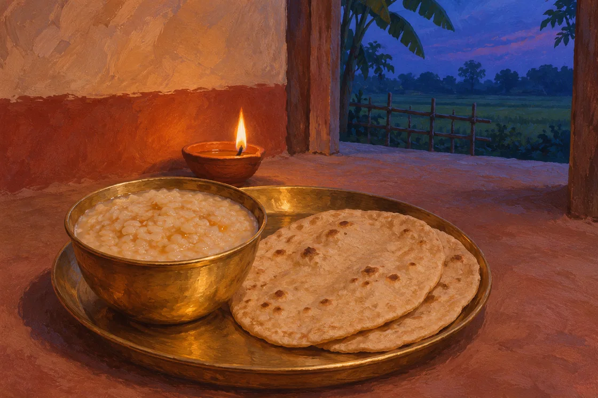
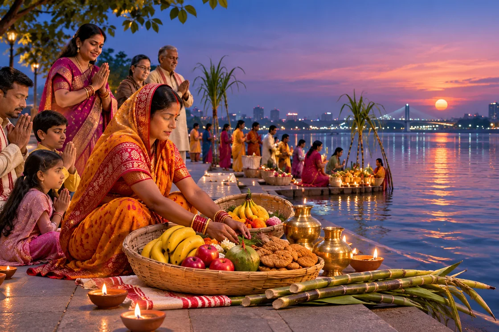
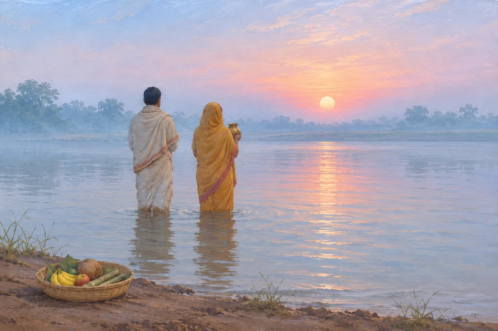
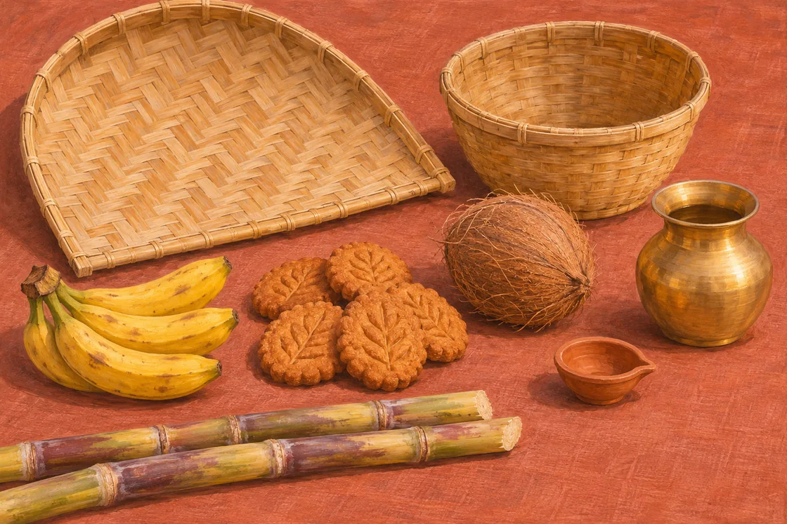
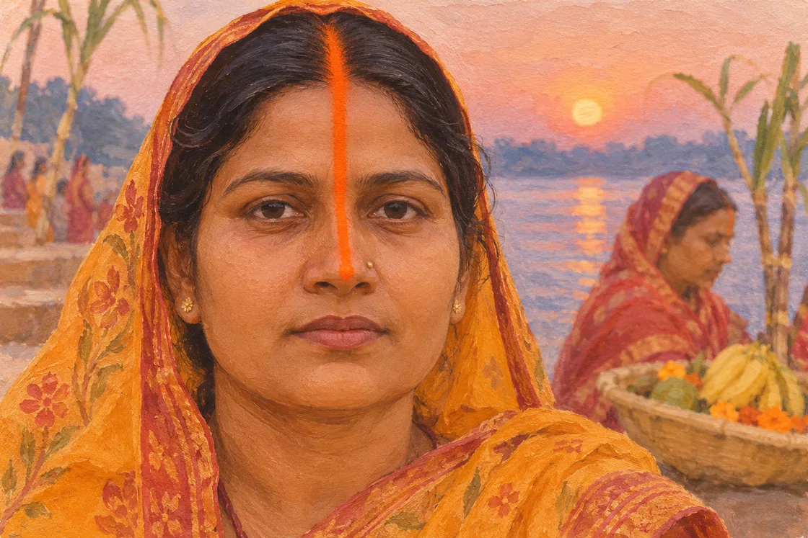
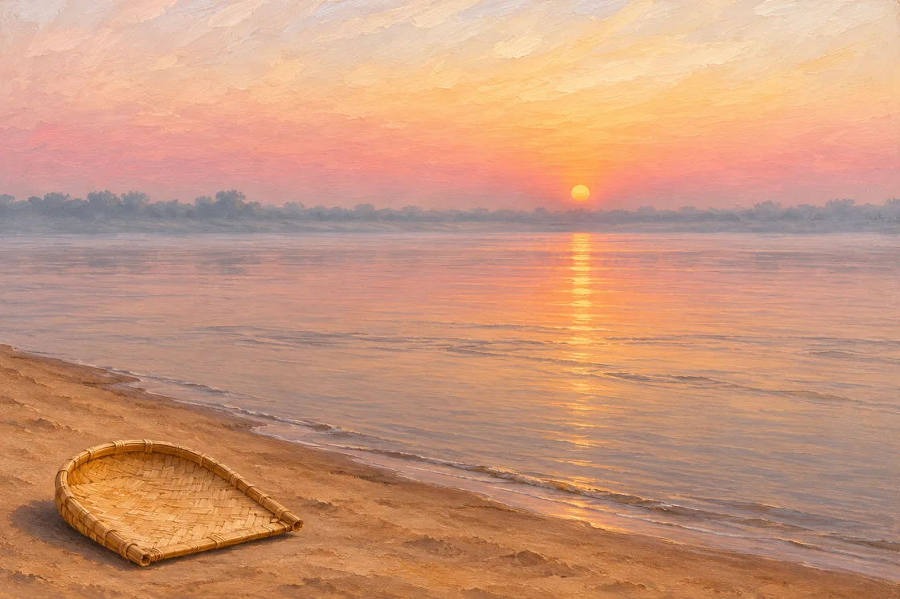

Time the arghya locally
13–16 November 2026 follows the New Delhi reference calendar. Offerings are associated with local sunset on 15 November and local sunrise on 16 November.
In Drik Panchang, select your city and confirm the year. For the Netherlands, choose your Dutch city and use its local time (CET in November). The Delhi listing displays Indian local times. Confirm gathering times separately with organisers.
Open the city-specific panchangWhat is Chhath Puja?
On the evening of Chhath, the centre of worship is the horizon. Families carry offerings to a ghat, a place where people reach the water, and face the setting Sun. They return before dawn to greet it again. Chhath is also called Surya Shashthi. Shashthi is the sixth lunar day, which in this autumn observance falls in the bright half of Kartik. The four days span the lunar days on either side of it. Drik Panchang
Devotees honour Surya Dev, the Sun deity, and Chhathi Maiya, whom many worship as Mother Shashthi and invoke for their family’s well-being. The names express different aspects of devotion within a single observance. An arghya is an offering of reverence. Here it often includes a stream of water from a small vessel. A vrat is a religious vow that can involve fasting, prayer and rules around food and preparation. The person keeping it is a vrati. Women often lead the observance, and men also keep the vow. Bihar Tourism · Bihar Bhawan
The vow belongs to the person who keeps it, but much of the work is shared. Families clean the kitchen, make prasad, carry the baskets, and make room for others at the ghat. Songs learned at home can accompany both the preparations and the walk to the water. For someone visiting for the first time, watching how a family prepares can explain as much as watching the moment of offering. Bharti Rai
The four days of Chhath
These illustrations follow the observance from the kitchen to the ghat. They were created with AI assistance and show examples of customary practice.
-

One customary Nahay Khay meal. · Chaturthi
Nahay Khay
The observance begins with bathing and preparing the home and kitchen. In many homes the vrati takes a simple meal of arwa rice, chana dal and bottle gourd or another customary vegetable. The particular meal varies. Setting aside utensils or cleaning the cooking space can be part of the preparation, and other family members often help. Bihar Tourism · Bihar Bhawan
-

Kheer and roti for the Kharna offering. · Panchami
Kharna / Lohanda
After a day of fasting, worship and an evening offering mark Kharna. Jaggery-sweetened rice kheer and roti are familiar forms of prasad. The vrati partakes and the prasad is shared. In many observances the longer fast then begins and continues through the evening arghya the next day until after the dawn offering. Drik Panchang · Bihar Bhawan
-

Water offered as the day closes. · Shashthi
Sandhya Arghya
The main evening gathering takes place around local sunset. Families bring bamboo trays of prasad to the water. The vrati faces the setting Sun, often standing in shallow water where local conditions allow, as water is offered and family members help with the vessel or trays. The gathering may continue with songs or worship at home. Bihar Tourism · Incredible India
-

Devotees return to the water before sunrise. · Saptami
Usha Arghya and Parana
Families return before dawn and make the second riverside offering to the rising Sun. This is also called Bihaniya Arghya in some places. Parana, the conclusion of the fast, follows the morning offering. The exact way families break the fast and distribute prasad differs by custom. Drik Panchang · Kolkata Municipal Corporation
Sacred stories and traditions
These accounts show how families connect a living custom with sacred literature and oral tradition. The antiquity of Sun worship does not by itself date Chhath’s present four-day form. No single story supplies a verifiable founding date.
The Sun at two horizons
At sunset
The day’s light is almost gone when the first riverside arghya is made. A reader might see in this gesture a way to give thanks for what has already been received and to acknowledge a close with care.
At sunrise
The second offering is made when the light returns. After a night of waiting, the dawn can suggest renewal. The same water and the same gesture connect the two moments.
This is an editorial reflection on the sequence. Families may explain its meaning in their own ways.
What goes into the offerings?

- Soop and daura
- A soop is a shallow bamboo winnowing tray that can hold the offerings; a daura is a deeper basket often used to carry them to the water.
- Thekua
- A moulded, fried sweet commonly made from wheat flour and jaggery or sugar. Families use different doughs and stamp or shape the pieces by hand.
- Fruit, coconut and sugarcane
- Seasonal fruit, often bananas, and whole coconuts fill many baskets. In some households Kosi includes lamps and prasad beneath a small arrangement of sugarcane stalks.
- Rice, arghya and lamps
- Rice appears in the first meal and in Kharna’s pudding. Water is widely used for arghya, with milk included in some customs. Earthen diyas may accompany the baskets or light the domestic worship space.
The basket changes with availability, local custom and what a family has learned to prepare. The objects pictured are examples. Bihar Bhawan · Incredible India
Chhath across regions
Chhath is deeply rooted in Bihar, Jharkhand and eastern Uttar Pradesh and across parts of Nepal’s Terai. The river or pond a family uses, the songs they know, and the foods they make mark local forms of the same observance. In Nepal, the Nepal Tourism Board identifies Janakpur as a major gathering place and describes celebrations along the Bagmati in Kathmandu, where families with roots in the Terai gather. Incredible India · Associated Press · Nepal Tourism Board
Migration has made Chhath part of life in cities far from these regions. The songs and bamboo trays can travel with a family; the riverbank may become a permitted pond, a designated ghat or a temporary community space. In the Netherlands, as anywhere abroad, check with local organisers about access and the gathering time, and consult a city-specific panchang for the local sunrise and sunset. A public event’s start time may differ from the moment of arghya. Bharti Rai
What visitors often see first is the ceremony at the water. Sustaining it takes work across the household and neighbourhood, from preparing food to sharing access to the shore. That work helps explain why Chhath can remain an anchor of regional identity even when the gathering is far from home.

Sindoor from parting to nose
At some ghats you may see married women wearing a long orange line of sindoor from the centre hair parting across the forehead to the tip of the nose. Firsthand accounts from Bihar describe this distinctive form during Chhath. For some families it expresses prayers for a spouse’s long life and the household’s well-being. Colour, length and use vary by person and custom. Hayden Seth Kantor · Museum of Material Memory
What the observance asks us to notice

There is a difference between knowing that a day has ended and taking the time to watch it end. Chhath asks for that attention twice. The offerings bring the harvest close, the river makes care for a shared place visible, and the wait for dawn makes time part of the worship. People who keep the vrat may describe that discipline through faith. Others can recognise gratitude in the work of preparing food, carrying a basket for someone else, or leaving the shore clean after the gathering.
Sources and further reading
- Drik Panchang, 2026 Chhath Puja Calendar
- Kolkata Municipal Corporation, Chhat Puja 2026, p. 20
- Bihar Tourism, Chhath Puja
- Bihar Bhawan, 2024 newsletter on Chhath
- Bihar Bhawan, December 2025 newsletter, traditional offerings
- Incredible India, Chhath Puja
- Nepal Tourism Board, Chhat Parva
- Associated Press, on-site coverage of Chhath in 2024
- Sahapedia, Chhath Puja and the story of Devasena
- Mahabharata, Vana Parva III, K. M. Ganguli translation
- Hayden Seth Kantor, Food, Farming, and the Caring Family in Bihar, Cornell University, 2016, ch. 6
- Harsh Aditya, Rajkali Devi, Kamla and the Silver Sindoor Daani, Museum of Material Memory
- Bharti Rai, “Where the River Is the Script,” Indi@logs 13(2), 2026
About this guide
Sanatana Series is an independent, non-commercial educational blog. Chhath practices and interpretations vary by household and region. If you spot a factual error, please share the passage and a supporting source through the project on GitHub. Sanatana Series on GitHub
Last updated